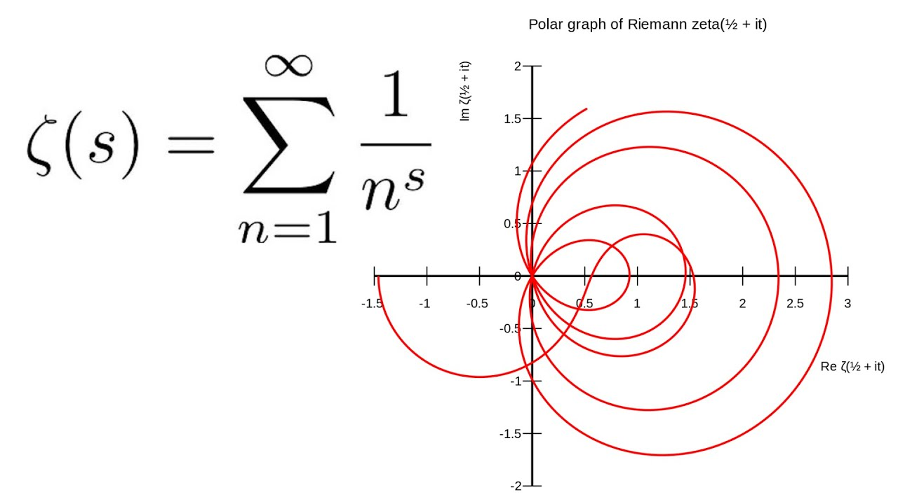
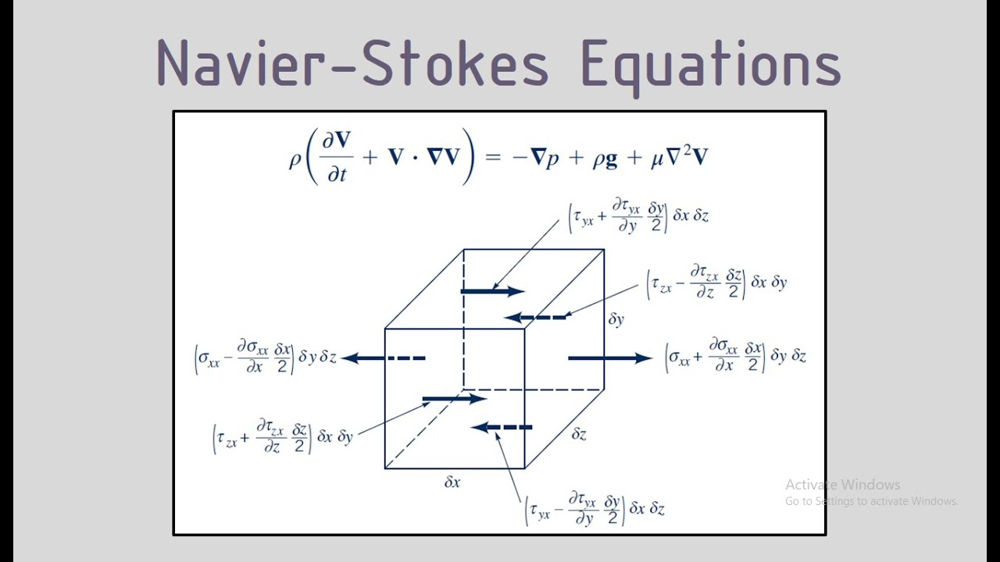

Welcome in the pure mathworld
Pure mathematics is the study of mathematical concepts independently of any application outside mathematics. These concepts may originate in real-world concerns, and the results obtained may later turn out to be useful for practical applications, but pure mathematicians are not primarily motivated by such applications. Instead, the appeal is attributed to the intellectual challenge and aesthetic beauty of working out the logical consequences of basic principles.
In this part, this is an formulas that is quite useful in pure mathematics
Many mathematical problems have been stated but not yet solved. These problems come from many areas of mathematics, such as theoretical physics, computer science, algebra, analysis, combinatorics, algebraic, differential, discrete and Euclidean geometries, graph theory, group theory, model theory, number theory, set theory, Ramsey theory, dynamical systems, and partial differential equations. Some problems belong to more than one discipline and are studied using techniques from different areas. Prizes are often awarded for the solution to a long-standing problem, and some lists of unsolved problems, such as the Millennium Prize Problems, receive considerable attention.
A mathematical problem is a problem that can be represented, analyzed, and possibly solved, with the methods of mathematics. This can be a real-world problem, such as computing the orbits of the planets in the solar system, or a problem of a more abstract nature, such as Hilbert's problems. It can also be a problem referring to the nature of mathematics itself, such as Russell's Paradox.
here's the lists :
The Riemann zeta function ζ(s) is a function whose arguments may be any complex number other than 1, and whose values are also complex. Its analytical continuation has zeros at the negative even integers; that is, ζ(s) = 0 when s is one of −2, −4, −6, .... These are called its trivial zeros. However, the negative even integers are not the only values for which the zeta function is zero. The other ones are called nontrivial zeros.
The Riemann hypothesis is concerned with the locations of these nontrivial zeros, and states that:
The real part of every nontrivial zero of the Riemann zeta function is 1/2.
the formula are :
\(\sum_{n=1}^{\infty} \frac{1}{n^s} = \frac{1}{1^s} + \frac{1}{2^s} + \frac{1}{3^s} + \ldots \)
here's the graph for the riemann functions:
In mathematics, the Navier–Stokes equations are a system of nonlinear partial differential equations for abstract vector fields of any size. In physics and engineering, they are a system of equations that model the motion of liquids or non-rarefied gases (in which the mean free path is short enough so that it can be thought of as a continuum mean instead of a collection of particles) using continuum mechanics. The equations are a statement of Newton's second law, with the forces modeled according to those in a viscous Newtonian fluid—as the sum of contributions by pressure, viscous stress and an external body force. The Navier–Stokes existence and smoothness problem concerns the mathematical properties of solutions to the Navier–Stokes equations, a system of partial differential equations that describe the motion of a fluid in space. Solutions to the Navier–Stokes equations are used in many practical applications.
Here's the Navier-Stokes Equation are seen below :
a). \(\nabla\cdot \overrightarrow{\rm V} = 0 \)
b). \(\rho\frac{D\textbf{v}}{Dt}=-\nabla p + \rho\textbf{g} + \mu\nabla^2\textbf{v}\)
Where a is an continuation equations and b are the momentum equations.
However, theoretical understanding of the solutions to these equations is incomplete. In particular, solutions of the Navier–Stokes equations often include turbulence, which remains one of the greatest unsolved problems in physics, despite its immense importance in science and engineering.
